STATISTICAL ARBITRAGE · 2025 KRW CRYPTO
Cointegration
Statistical Arbitrage
in Crypto Market
Johansen 공적분 검정으로 평균회귀 바스켓을 선별하고, 1분봉·15분봉에서 rolling out-of-sample 안정성과 수익성을 검증한 프로젝트
10KRW assets
90Dtrain window
7DOOS test
39OOS windows
research_pipeline.py
ADF → VAR lag → Johansen rank
→ cointegrating vector
→ spread ADF
→ AR(1) / OU half-life
→ Rolling OOS backtest
ENTRY : |z| ≥ 2.0
EXIT : |z| → 0.5
COST : 5bps + slippage
WEIGHT : gross exposure = 1
00
공적분이 존재한다는 것과
Overview
공적분이 존재한다는 것과
실제로 수익이 난다는 것은
다릅니다.
전체 표본에서 구조를 찾고, 이후 rolling OOS에서 그 관계가 지속되는지와 거래비용 이후 수익성을 별도로 검증했습니다.
01I(1) 확인레벨/1차 차분 ADF
→
02Johansenrank ≥ 1
→
03SpreadADF p < .05
→
04Mean Reversionb < 0 · Half-life
→
05OOS90D → 7D rolling
01
평균회귀 후보를
Screening
평균회귀 후보를
통계적으로 선별하기
BTC를 포함하는 3·4자산 바스켓을 만들고 VAR 시차, Johansen rank, 스프레드 정상성, AR(1), OU 반감기를 순서대로 확인했습니다.
1분봉 최종 후보
ADF < 0.05, AR(1) b < 0, Half-life 6시간~5일 조건을 통과한 6개 바스켓
| Basket | ADF p | AR b | Half-life |
|---|---|---|---|
| BTC|DOGE|DOT|ETH | 7.84e-08 | -0.000417 | 27.7h |
| BTC|AVAX|DOGE|XRP | 1.85e-07 | -0.000339 | 34.1h |
| BTC|LINK|SOL|XRP | 1.95e-06 | -0.000202 | 57.2h |
| BTC|ETH|LINK|SOL | 2.65e-05 | -0.000159 | 72.5h |
| BTC|AVAX|DOGE|ETH | 3.81e-05 | -0.000208 | 55.4h |
| BTC|LINK|SOL | 5.40e-05 | -0.000153 | 75.7h |
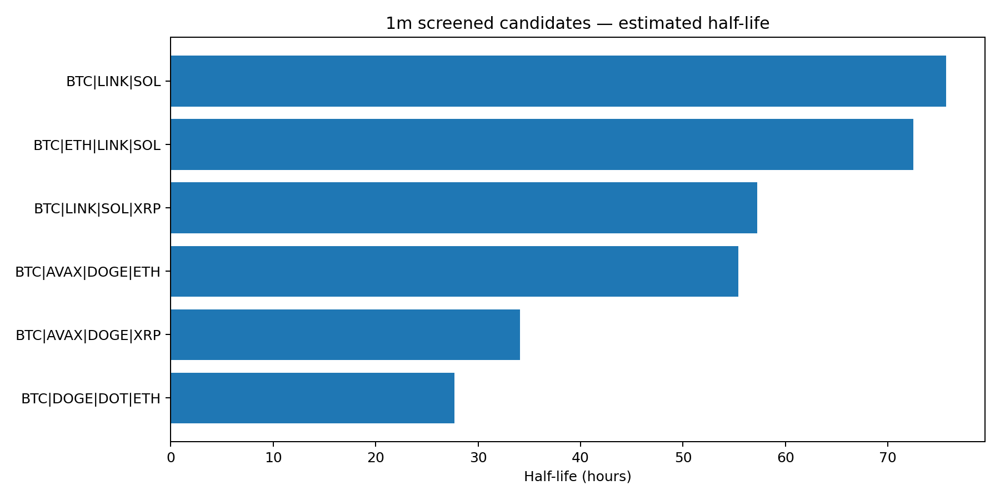
15m screening
2개 후보만 최종 필터를 통과
BTC-ADA-DOT-TRX · half-life 74.0h, ADF p=1.73e-07
BTC-LINK-SOL-TRX · half-life 107.4h, ADF p=1.08e-04
02
1분봉에서는 한 바스켓만
1m Rolling OOS
1분봉에서는 한 바스켓만
거래비용 이후에도 플러스
90일 Train → 7일 Test를 7일씩 이동했습니다. 각 Train 구간에서 Johansen vector를 다시 추정하고, Test 구간 rank가 0이면 거래하지 않았습니다.
BEST 1m BASKET
BTC · DOGE · DOT · ETH
0bps 추가 슬리피지 기준. 기본 거래비용 5bps는 코드에 별도로 반영되어 있습니다.
Cumulative return8.13%
Sharpe1.47
MDD-12.55%
Win rate71.43%
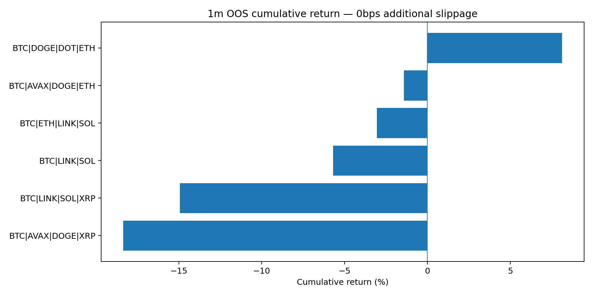
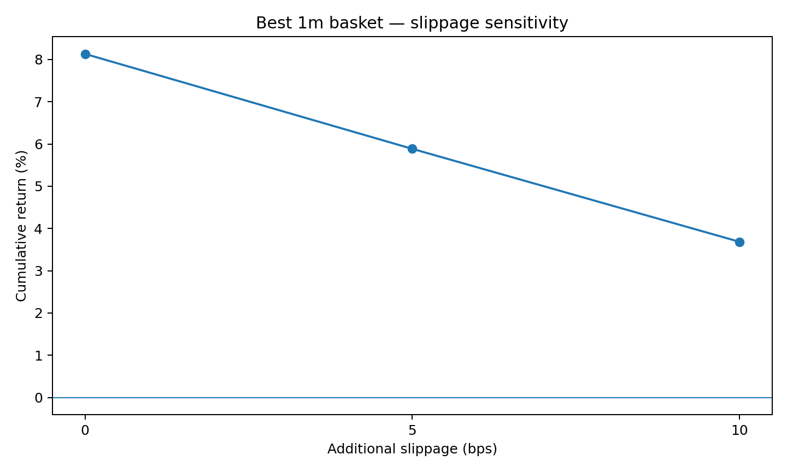
1m OOS summary · 0bps additional slippage
| Basket | Return | Sharpe | MDD | Trades | Win rate | Coint. windows |
|---|---|---|---|---|---|---|
| BTC|DOGE|DOT|ETH | 8.13% | 1.47 | -12.55% | 21 | 71.43% | 33.3% |
| BTC|AVAX|DOGE|ETH | -1.42% | -0.22 | -9.30% | 15 | 66.67% | 25.6% |
| BTC|ETH|LINK|SOL | -3.06% | -0.38 | -14.70% | 33 | 66.67% | 61.5% |
| BTC|LINK|SOL | -5.69% | -0.57 | -22.49% | 26 | 69.23% | 51.3% |
| BTC|LINK|SOL|XRP | -14.94% | -1.60 | -29.23% | 28 | 71.43% | 59.0% |
| BTC|AVAX|DOGE|XRP | -18.36% | -2.44 | -31.39% | 39 | 58.97% | 53.8% |
6개 바스켓 wealth curve 전체 보기 +
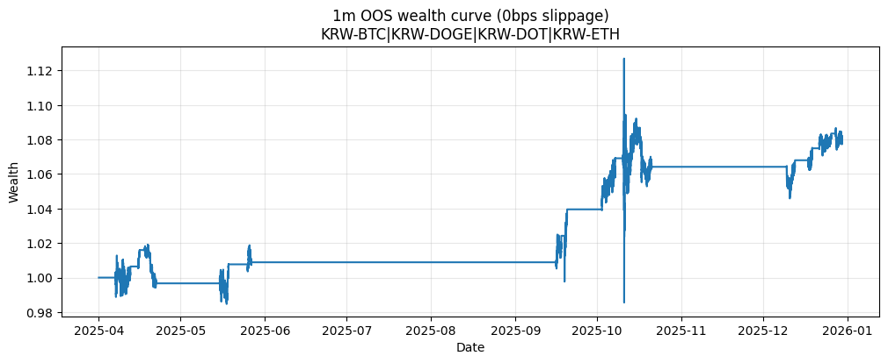
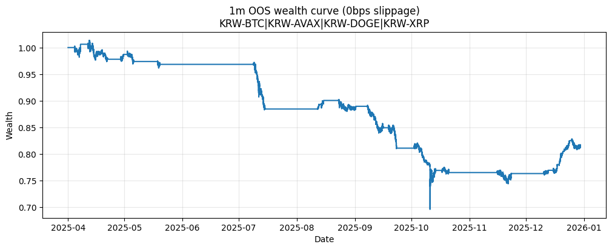
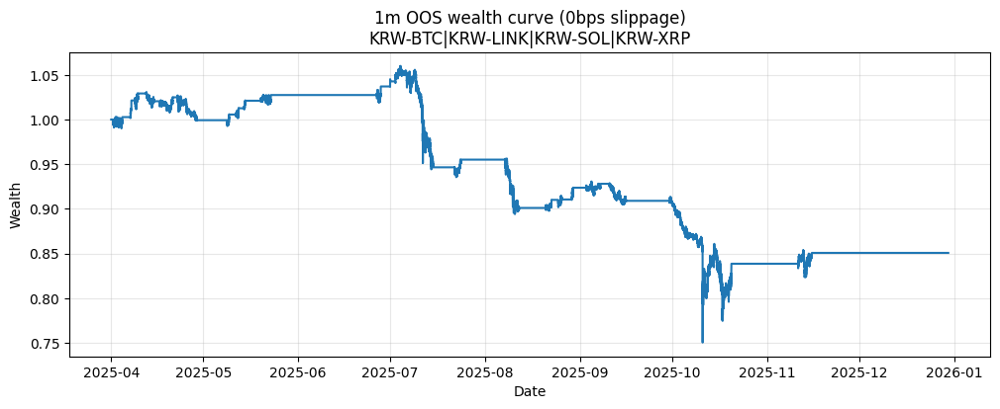
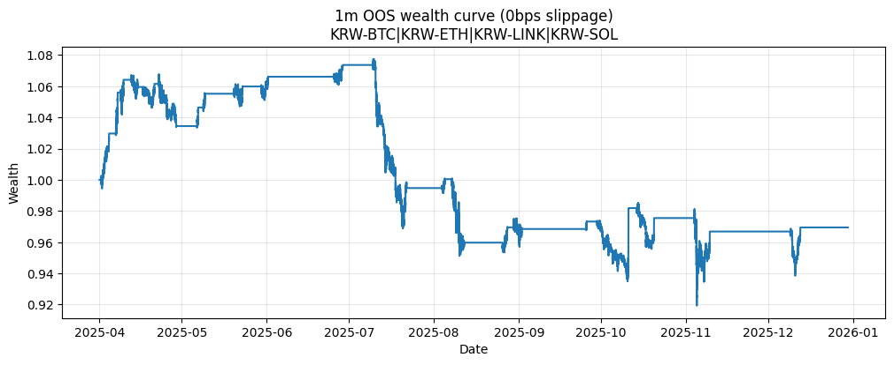
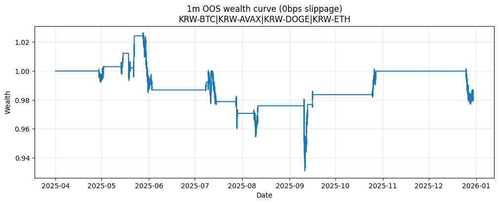
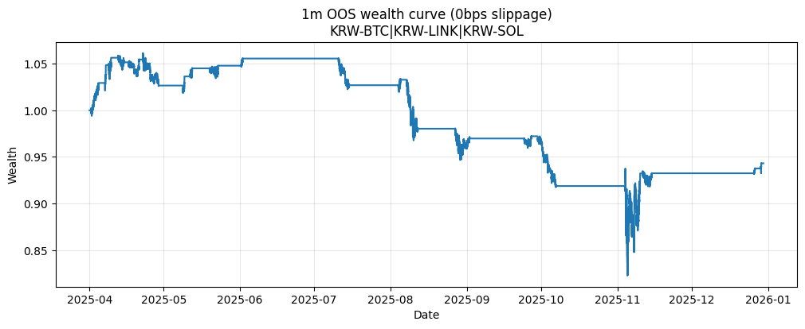
03
15분봉에서는
15m Rolling OOS
15분봉에서는
두 후보 모두 수익성 미확인
1분봉과 동일한 rolling 구조를 사용하되, 15분봉 screening에서 선별된 2개 바스켓만 검증했습니다.
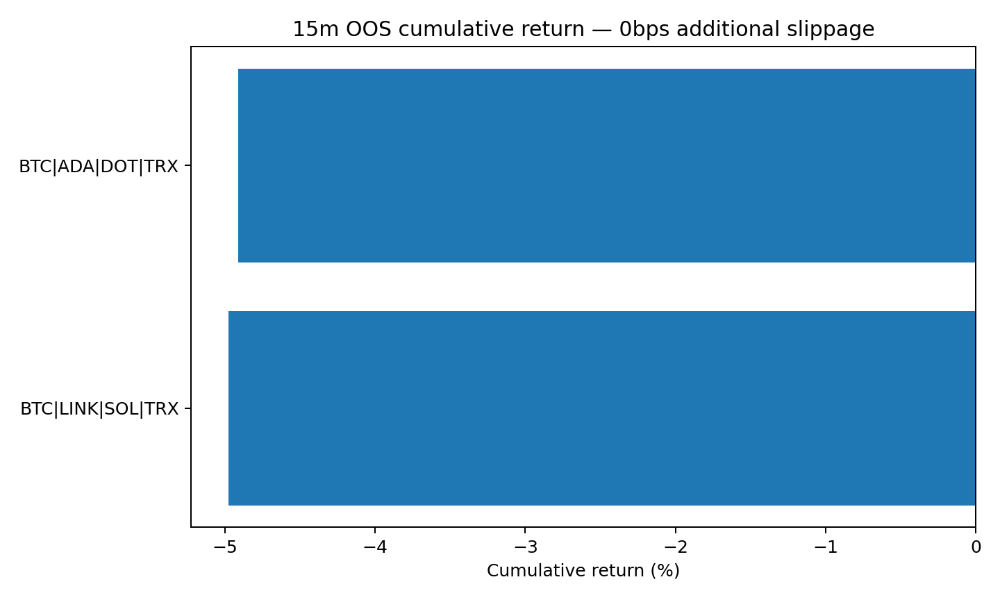
15m OOS summary
| Basket | Return | Sharpe | MDD | Trades | Win rate | Coint. windows |
|---|---|---|---|---|---|---|
| BTC|ADA|DOT|TRX | -4.91% | -1.19 | -9.99% | 12 | 58.33% | 20.5% |
| BTC|LINK|SOL|TRX | -4.98% | -1.08 | -8.82% | 14 | 57.14% | 28.2% |
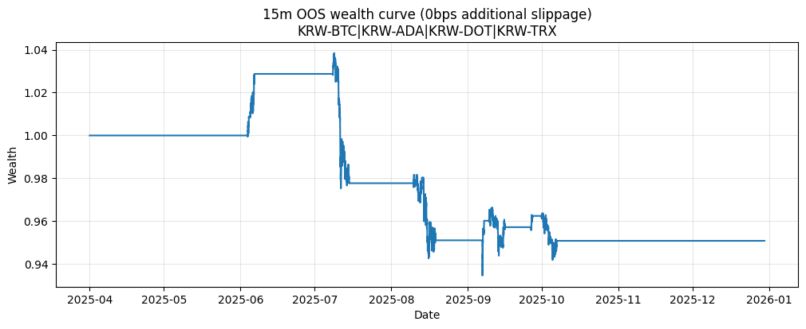
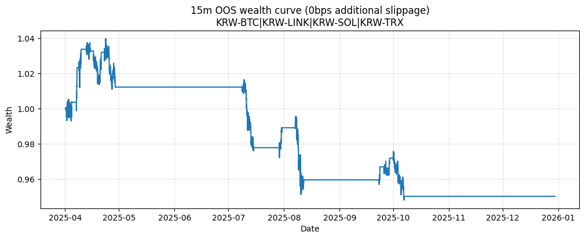
04
Interpretation
분석 결과가 말해주는 것
통계적 공적분 관계가 존재해도 그 관계가 모든 OOS 구간에서 유지되거나 거래비용 이후 수익으로 연결되는 것은 아니었습니다.
In-sample ≠ OOS profitability
스크리닝을 통과한 1분봉 6개 중 5개는 OOS 누적수익률이 음수였습니다. 공적분·정상성 검정은 거래 전략의 충분조건이 아닙니다.
관계의 지속성도 제한적
1분봉 후보의 공적분 유지 비율은 약 25.6%~61.5%, 15분봉은 20.5%~28.2%였습니다. Train에서 찾은 구조가 Test에서도 계속 존재하지 않았습니다.
비용 민감도
최고 1분봉 바스켓도 추가 슬리피지가 커질수록 수익률과 Sharpe가 빠르게 감소했습니다. 평균회귀 전략에서 회전율과 체결비용이 핵심입니다.
잔차 자기상관
screening 결과의 Ljung-Box p-value가 매우 작아 잔차 자기상관이 남아 있습니다. AR(1)/OU 기반 반감기는 유용한 요약치지만 단순화된 근사로 해석할 필요가 있습니다.
05
Code Explorer
분석 코드와 결과 파일
Johansen_test_1m.ipynb 전체 코드 +
!pip install statsmodels
# ─────────────────────────────────────────
import numpy as np
import pandas as pd
from statsmodels.tsa.stattools import adfuller
from google.colab import drive
drive.mount('/content/drive')
PATH = "/content/drive/MyDrive/코인데이터/ALL_1m.parquet"
# 1) 데이터 로드
df = pd.read_parquet(PATH)
# 2025년만 사용
df = df.loc["2025-01-01":"2025-12-31"]
results = []
for col in df.columns:
series = df[col].dropna()
series = series[series > 0]
if len(series) < 5000:
continue
logp = np.log(series)
# 레벨 ADF (unit root 존재 여부 확인)
adf_level = adfuller(logp.values, regression="c", maxlag=1, autolag=None)
p_level = adf_level[1]
# 1차 차분 ADF
diff1 = logp.diff().dropna()
adf_diff = adfuller(diff1.values, regression="c", maxlag=1, autolag=None)
p_diff = adf_diff[1]
is_I1 = (p_level > 0.05) and (p_diff < 0.05)
results.append({
"coin": col,
"p_level": p_level,
"p_diff1": p_diff,
"is_I(1)": is_I1,
"n_obs": len(logp)
})
result_df = pd.DataFrame(results).sort_values("p_diff1")
pd.set_option("display.max_rows", None)
print(result_df.to_string(index=False))
# ─────────────────────────────────────────
# 2) VAR lag 선택 (AIC/BIC) + 바스켓 생성 + basket_key 생성
import numpy as np
import pandas as pd
import itertools
from statsmodels.tsa.vector_ar.var_model import VAR
from google.colab import drive
drive.mount('/content/drive')
PATH = "/content/drive/MyDrive/코인데이터/ALL_1m.parquet"
BASE = "KRW-BTC"
MAXLAGS = 5
MIN_ROWS = 20000
df = pd.read_parquet(PATH)
df = df.loc["2025-01-01":"2025-12-31"].sort_index()
# 1) 단계에서 I(1)으로 판정된 코인만 사용
I1_COINS = result_df.loc[result_df["is_I(1)"] == True, "coin"].tolist()
if BASE not in I1_COINS:
raise ValueError(f"{BASE}가 I(1) 조건을 만족하지 않아 바스켓을 구성할 수 없습니다.")
all_coins = [c for c in I1_COINS if c in df.columns]
others = [c for c in all_coins if c != BASE]
baskets = []
for combo in itertools.combinations(others, 2):
baskets.append([BASE] + list(combo))
for combo in itertools.combinations(others, 3):
baskets.append([BASE] + list(combo))
def prep_logp_for_basket(basket):
prices = df[basket].dropna(how="any")
prices = prices[(prices > 0).all(axis=1)]
if len(prices) < MIN_ROWS:
return None
return np.log(prices)
lag_rows = []
for B in baskets:
logp = prep_logp_for_basket(B)
if logp is None:
continue
try:
sel = VAR(logp.values).select_order(maxlags=MAXLAGS)
p_aic = sel.aic
p_bic = sel.bic
p_used = p_aic if p_aic is not None else p_bic
if p_used is None:
p_used = 1
p_used = max(int(p_used), 1)
k_ar_diff = max(p_used - 1, 0)
lag_rows.append({
"basket_key": "|".join(B),
"basket": B,
"n_rows": len(logp),
"p_aic": None if p_aic is None else int(p_aic),
"p_bic": None if p_bic is None else int(p_bic),
"p_used": p_used,
"k_ar_diff": k_ar_diff,
})
except Exception:
continue
lag_df = pd.DataFrame(lag_rows).sort_values(["n_rows"], ascending=False)
print("lag_df rows:", len(lag_df))
print(lag_df.head(10).to_string(index=False))
# ─────────────────────────────────────────
# 3) Johansen test (rank 결정) + candidates_df 생성
from statsmodels.tsa.vector_ar.vecm import coint_johansen
DET_ORDER = 0
def choose_rank_trace(jres, alpha=0.05):
col = {0.10: 0, 0.05: 1, 0.01: 2}[alpha]
rank = 0
for r in range(len(jres.lr1)):
if jres.lr1[r] > jres.cvt[r, col]:
rank = r + 1
return rank
joh_rows = []
for _, row in lag_df.iterrows():
B = row["basket"]
k_ar_diff = int(row["k_ar_diff"])
basket_key = row["basket_key"]
logp = prep_logp_for_basket(B)
if logp is None:
continue
try:
jres = coint_johansen(logp.values, det_order=DET_ORDER, k_ar_diff=k_ar_diff)
r10 = choose_rank_trace(jres, 0.10)
r05 = choose_rank_trace(jres, 0.05)
r01 = choose_rank_trace(jres, 0.01)
joh_rows.append({
"basket_key": basket_key,
"basket": B,
"k_ar_diff": k_ar_diff,
"rank_10%": r10,
"rank_5%": r05,
"rank_1%": r01,
})
except Exception:
continue
joh_df = pd.DataFrame(joh_rows).sort_values(["rank_5%", "rank_10%"], ascending=[False, False])
print("joh_df rows:", len(joh_df))
print(joh_df.head(20).to_string(index=False))
candidates_df = joh_df[joh_df["rank_5%"] >= 1].copy()
print("\ncandidates (rank_5%>=1):", len(candidates_df))
# ─────────────────────────────────────────
# 4) 공적분 벡터 가중치(weights) 생성 (rank 개수만큼), weights_df 생성
def normalize_on_anchor(vec, anchor_idx):
v = vec.astype(float).copy()
if abs(v[anchor_idx]) < 1e-12:
v = v / (np.max(np.abs(v)) + 1e-12)
else:
v = v / v[anchor_idx]
return v
weight_rows = []
for _, row in candidates_df.iterrows():
B = row["basket"]
basket_key = row["basket_key"]
k_ar_diff = int(row["k_ar_diff"])
rank = int(row["rank_5%"])
logp = prep_logp_for_basket(B)
if logp is None:
continue
cols = list(logp.columns)
anchor_idx = cols.index(BASE)
try:
jres = coint_johansen(logp.values, det_order=DET_ORDER, k_ar_diff=k_ar_diff)
except Exception:
continue
for i in range(rank):
w = normalize_on_anchor(jres.evec[:, i], anchor_idx)
weights = pd.Series(w, index=cols).to_dict()
weight_rows.append({
"basket_key": basket_key,
"basket": B,
"k_ar_diff": k_ar_diff,
"rank_5%": rank,
"vector_number": i + 1,
"weights": weights
})
weights_df = pd.DataFrame(weight_rows).sort_values(
["rank_5%", "basket_key", "vector_number"],
ascending=[False, True, True]
)
print("weights_df rows:", len(weights_df))
print(weights_df.head(10).to_string(index=False))
# ─────────────────────────────────────────
# 5) 스프레드 정상성 확인 (ADF), spread_adf_df 생성 (안전 버전)
from statsmodels.tsa.stattools import adfuller
def build_spread(logp_df, weights_dict):
w = np.array([weights_dict[c] for c in logp_df.columns], dtype=float)
return pd.Series(logp_df.values @ w, index=logp_df.index)
spread_adf_rows = []
cnt_total = 0
cnt_logp_none = 0
cnt_spread_short = 0
cnt_adf_fail = 0
cnt_ok = 0
for _, row in weights_df.iterrows():
cnt_total += 1
B = row["basket"]
basket_key = row["basket_key"]
weights = row["weights"]
logp = prep_logp_for_basket(B)
if logp is None:
cnt_logp_none += 1
continue
spread = build_spread(logp, weights).dropna().astype(float)
if len(spread) < 2000:
cnt_spread_short += 1
continue
try:
stat, pval, usedlag, nobs, crit = adfuller(
spread.values,
regression="c",
maxlag=1,
autolag=None
)
spread_adf_rows.append({
"basket_key": basket_key,
"vector_number": int(row["vector_number"]),
"spread_adf_p": float(pval),
"spread_adf_stat": float(stat),
"nobs": int(nobs),
"used_lag": int(usedlag),
})
cnt_ok += 1
except Exception:
cnt_adf_fail += 1
continue
print("weights_df rows:", len(weights_df))
print("total tried:", cnt_total)
print("skipped (logp None):", cnt_logp_none)
print("skipped (spread too short):", cnt_spread_short)
print("failed (adfuller exception):", cnt_adf_fail)
print("ok:", cnt_ok)
if len(spread_adf_rows) == 0:
print("spread_adf_rows is empty. No ADF results to sort.")
spread_adf_df = pd.DataFrame(columns=[
"basket_key","vector_number","spread_adf_p","spread_adf_stat","nobs","used_lag"
])
else:
spread_adf_df = pd.DataFrame(spread_adf_rows).sort_values("spread_adf_p")
print("spread_adf_df rows:", len(spread_adf_df))
print(spread_adf_df.head(20).to_string(index=False))
# ─────────────────────────────────────────
# 6) AR(1) 적합 가능 확인 (b<0, R^2, Ljung-Box), ar1_df 생성
from statsmodels.stats.diagnostic import acorr_ljungbox
ar1_rows = []
for _, row in weights_df.iterrows():
B = row["basket"]
basket_key = row["basket_key"]
weights = row["weights"]
logp = prep_logp_for_basket(B)
if logp is None:
continue
spread = build_spread(logp, weights).dropna().astype(float)
if len(spread) < 2000:
continue
s_lag = spread.shift(1).dropna()
ds = spread.diff().dropna()
ds = ds.loc[s_lag.index]
X = np.column_stack([np.ones(len(s_lag)), s_lag.values])
y = ds.values
beta = np.linalg.lstsq(X, y, rcond=None)[0]
a, b = float(beta[0]), float(beta[1])
yhat = X @ beta
resid = y - yhat
sse = float(np.sum((y - yhat) ** 2))
sst = float(np.sum((y - np.mean(y)) ** 2))
r2 = 1.0 - (sse / sst) if sst > 0 else np.nan
try:
lb = acorr_ljungbox(resid, lags=[20], return_df=True)
lb_p = float(lb["lb_pvalue"].iloc[0])
except Exception:
lb_p = np.nan
ar1_rows.append({
"basket_key": basket_key,
"vector_number": int(row["vector_number"]),
"a": a,
"b": b,
"b_negative": (b < 0),
"r2": float(r2),
"ljungbox_p_lag20": lb_p,
"n": int(len(y)),
})
ar1_df = pd.DataFrame(ar1_rows)
print("ar1_df rows:", len(ar1_df))
print(ar1_df.sort_values(["b_negative", "ljungbox_p_lag20"], ascending=[False, False]).head(20).to_string(index=False))
# ─────────────────────────────────────────
# 7) 반감기 계산 + 최종 결합/정렬 + 저장
def half_life_from_b(b):
if b is None or np.isnan(b):
return np.nan
if b >= 0:
return np.inf
return float(-np.log(2) / b)
final = (weights_df
.merge(spread_adf_df, on=["basket_key", "vector_number"], how="left")
.merge(ar1_df, on=["basket_key", "vector_number"], how="left"))
final["half_life_minutes"] = final["b"].apply(half_life_from_b)
final = final.sort_values(
by=["rank_5%", "spread_adf_p", "half_life_minutes"],
ascending=[False, True, True]
)
pd.set_option("display.max_rows", None)
pd.set_option("display.max_colwidth", None)
print(final[[
"basket_key", "basket", "rank_5%", "vector_number", "k_ar_diff",
"spread_adf_p", "b", "ljungbox_p_lag20", "half_life_minutes", "weights"
]].to_string(index=False))
final.to_csv("cointegration_screen_1m_2025.csv", index=False, encoding="utf-8-sig")
print("\nSaved: cointegration_screen_1m_2025.csv")Johansen_test_15m.ipynb 전체 코드 +
# 1) 15분봉 생성 + 각 시계열 I(1) 확인 (레벨/1차차분 ADF)
import numpy as np
import pandas as pd
from statsmodels.tsa.stattools import adfuller
from google.colab import drive
drive.mount('/content/drive')
PATH = "/content/drive/MyDrive/코인데이터/ALL_1m.parquet"
BASE = "KRW-BTC"
df_1m = pd.read_parquet(PATH).sort_index()
df_1m = df_1m.loc["2025-01-01":"2025-12-31"]
# 15분봉 (pandas 경고 방지: '15min' 사용)
df = df_1m.resample("15min").last()
def adf_pvalue(x, regression="c", maxlag=1):
x = np.asarray(x)
return float(adfuller(x, regression=regression, maxlag=maxlag, autolag=None)[1])
i1_rows = []
for c in df.columns:
s = df[c].dropna()
s = s[s > 0]
if len(s) < 5000:
continue
logp = np.log(s)
p_level = adf_pvalue(logp.values, regression="c", maxlag=1)
p_diff1 = adf_pvalue(logp.diff().dropna().values, regression="c", maxlag=1)
is_i1 = (p_level > 0.05) and (p_diff1 < 0.05)
i1_rows.append({"coin": c, "p_level": p_level, "p_diff1": p_diff1, "is_I(1)": is_i1, "n_obs": len(logp)})
i1_df = pd.DataFrame(i1_rows).sort_values(["is_I(1)", "p_diff1"], ascending=[False, True])
pd.set_option("display.max_rows", None)
print(i1_df.to_string(index=False))
I1_COINS = i1_df.loc[i1_df["is_I(1)"] == True, "coin"].tolist()
print("\nI(1) coins:", I1_COINS)
# ─────────────────────────────────────────
# 2) 바스켓 생성 (BTC 필수) + VAR lag 선택 (AIC/BIC)
import itertools
from statsmodels.tsa.vector_ar.var_model import VAR
MAXLAGS = 10
MIN_ROWS = 5000
# BTC 포함 + I(1) 코인만
others = [c for c in I1_COINS if c != BASE]
baskets = []
for combo in itertools.combinations(others, 2): # BTC+2 (3자산)
baskets.append([BASE] + list(combo))
for combo in itertools.combinations(others, 3): # BTC+3 (4자산)
baskets.append([BASE] + list(combo))
def prep_logp_for_basket(basket):
prices = df[basket].dropna(how="any")
prices = prices[(prices > 0).all(axis=1)]
if len(prices) < MIN_ROWS:
return None
return np.log(prices)
lag_rows = []
for B in baskets:
logp = prep_logp_for_basket(B)
if logp is None:
continue
try:
sel = VAR(logp.values).select_order(maxlags=MAXLAGS)
p_aic = sel.aic
p_bic = sel.bic
p_used = p_aic if p_aic is not None else p_bic
if p_used is None:
p_used = 1
p_used = max(int(p_used), 1)
k_ar_diff = max(p_used - 1, 0)
lag_rows.append({
"basket_key": "|".join(B),
"basket": B,
"n_rows": len(logp),
"p_aic": None if p_aic is None else int(p_aic),
"p_bic": None if p_bic is None else int(p_bic),
"p_used": p_used,
"k_ar_diff": k_ar_diff
})
except Exception:
continue
lag_df = pd.DataFrame(lag_rows).sort_values(["n_rows"], ascending=False)
print("lag_df rows:", len(lag_df))
print(lag_df.head(10).to_string(index=False))
# ─────────────────────────────────────────
# 3) Johansen test (rank 결정)
from statsmodels.tsa.vector_ar.vecm import coint_johansen
DET_ORDER = 0
def choose_rank_trace(jres, alpha=0.05):
col = {0.10: 0, 0.05: 1, 0.01: 2}[alpha]
rank = 0
for r in range(len(jres.lr1)):
if jres.lr1[r] > jres.cvt[r, col]:
rank = r + 1
return rank
joh_rows = []
for _, row in lag_df.iterrows():
B = row["basket"]
basket_key = row["basket_key"]
k_ar_diff = int(row["k_ar_diff"])
logp = prep_logp_for_basket(B)
if logp is None:
continue
try:
jres = coint_johansen(logp.values, det_order=DET_ORDER, k_ar_diff=k_ar_diff)
r10 = choose_rank_trace(jres, 0.10)
r05 = choose_rank_trace(jres, 0.05)
r01 = choose_rank_trace(jres, 0.01)
joh_rows.append({
"basket_key": basket_key,
"basket": B,
"k_ar_diff": k_ar_diff,
"rank_10%": r10,
"rank_5%": r05,
"rank_1%": r01
})
except Exception:
continue
joh_df = pd.DataFrame(joh_rows).sort_values(["rank_5%", "rank_10%"], ascending=[False, False])
print("joh_df rows:", len(joh_df))
print(joh_df.head(20).to_string(index=False))
candidates_df = joh_df[joh_df["rank_5%"] >= 1].copy()
print("\ncandidates (rank_5%>=1):", len(candidates_df))
# ─────────────────────────────────────────
# 4) 공적분 벡터 가중치(weights) 생성 (rank 개수만큼)
def normalize_on_anchor(vec, anchor_idx):
v = vec.astype(float).copy()
if abs(v[anchor_idx]) < 1e-12:
v = v / (np.max(np.abs(v)) + 1e-12)
else:
v = v / v[anchor_idx]
return v
weight_rows = []
for _, row in candidates_df.iterrows():
B = row["basket"]
basket_key = row["basket_key"]
k_ar_diff = int(row["k_ar_diff"])
rank = int(row["rank_5%"])
logp = prep_logp_for_basket(B)
if logp is None:
continue
cols = list(logp.columns)
anchor_idx = cols.index(BASE)
try:
jres = coint_johansen(logp.values, det_order=DET_ORDER, k_ar_diff=k_ar_diff)
except Exception:
continue
for i in range(rank):
w = normalize_on_anchor(jres.evec[:, i], anchor_idx)
weights = pd.Series(w, index=cols).to_dict()
weight_rows.append({
"basket_key": basket_key,
"basket": B,
"k_ar_diff": k_ar_diff,
"rank_5%": rank,
"vector_number": i + 1,
"weights": weights
})
weights_df = pd.DataFrame(weight_rows).sort_values(
["rank_5%", "basket_key", "vector_number"],
ascending=[False, True, True]
)
print("weights_df rows:", len(weights_df))
print(weights_df.head(10).to_string(index=False))
# ─────────────────────────────────────────
# 5) 스프레드 구성 + 스프레드 정상성(ADF)
from statsmodels.tsa.stattools import adfuller
def build_spread(logp_df, weights_dict):
w = np.array([weights_dict[c] for c in logp_df.columns], dtype=float)
return pd.Series(logp_df.values @ w, index=logp_df.index)
spread_adf_rows = []
for _, row in weights_df.iterrows():
B = row["basket"]
basket_key = row["basket_key"]
weights = row["weights"]
logp = prep_logp_for_basket(B)
if logp is None:
continue
spread = build_spread(logp, weights).dropna().astype(float)
try:
stat, pval, usedlag, nobs, crit, _ = adfuller(spread.values, regression="c", maxlag=5, autolag="AIC")
spread_adf_rows.append({
"basket_key": basket_key,
"vector_number": int(row["vector_number"]),
"spread_adf_p": float(pval),
"spread_adf_stat": float(stat),
"nobs": int(nobs),
"used_lag": int(usedlag)
})
except Exception:
continue
spread_adf_df = pd.DataFrame(spread_adf_rows)
print("spread_adf_df rows:", len(spread_adf_df))
if len(spread_adf_df) == 0:
print("No ADF results.")
else:
spread_adf_df = spread_adf_df.sort_values("spread_adf_p")
print(spread_adf_df.head(20).to_string(index=False))
# ─────────────────────────────────────────
# 6) AR(1) 적합 가능 확인 (b<0, Ljung-Box)
from statsmodels.stats.diagnostic import acorr_ljungbox
ar1_rows = []
for _, row in weights_df.iterrows():
B = row["basket"]
basket_key = row["basket_key"]
weights = row["weights"]
logp = prep_logp_for_basket(B)
if logp is None:
continue
spread = build_spread(logp, weights).dropna().astype(float)
if len(spread) < 2000:
continue
s_lag = spread.shift(1).dropna()
ds = spread.diff().dropna()
ds = ds.loc[s_lag.index]
X = np.column_stack([np.ones(len(s_lag)), s_lag.values])
y = ds.values
beta = np.linalg.lstsq(X, y, rcond=None)[0]
a, b = float(beta[0]), float(beta[1])
yhat = X @ beta
resid = y - yhat
try:
lb = acorr_ljungbox(resid, lags=[20], return_df=True)
lb_p = float(lb["lb_pvalue"].iloc[0])
except Exception:
lb_p = np.nan
ar1_rows.append({
"basket_key": basket_key,
"vector_number": int(row["vector_number"]),
"a": a,
"b": b,
"b_negative": (b < 0),
"ljungbox_p_lag20": lb_p,
"n": int(len(y))
})
ar1_df = pd.DataFrame(ar1_rows)
print("ar1_df rows:", len(ar1_df))
if len(ar1_df) == 0:
print("No AR(1) results.")
else:
print(ar1_df.sort_values(["b_negative", "ljungbox_p_lag20"], ascending=[False, False]).head(20).to_string(index=False))
# ─────────────────────────────────────────
# 7번) OU 모델 기반 반감기 계산 (X_{t+1} = alpha + beta X_t)
import numpy as np
import pandas as pd
BAR_MINUTES = 15 # 15분봉
DT = BAR_MINUTES # 단위를 "분"으로 두고 진행 (kappa: 1/분)
def ou_fit_half_life(spread: pd.Series, dt_minutes=15):
s = spread.dropna().astype(float)
# OU 회귀: X_{t+1} = alpha + beta X_t + eps
x = s.shift(1).dropna()
y = s.loc[x.index]
if len(x) < 2000:
return None
X = np.column_stack([np.ones(len(x)), x.values])
beta_hat = np.linalg.lstsq(X, y.values, rcond=None)[0]
alpha, beta = float(beta_hat[0]), float(beta_hat[1])
# 안정성 조건: |beta| < 1 이어야 평균복귀 OU로 해석 가능
if not np.isfinite(beta) or beta <= 0 or beta >= 1:
return {
"alpha": alpha, "beta": beta,
"kappa_per_min": np.nan,
"mu": np.nan,
"half_life_bars": np.inf,
"half_life_minutes": np.inf
}
# OU 파라미터 변환
kappa_per_min = -np.log(beta) / dt_minutes
mu = alpha / (1 - beta)
# 반감기
half_life_minutes = np.log(2) / kappa_per_min
half_life_bars = half_life_minutes / dt_minutes
return {
"alpha": alpha,
"beta": beta,
"kappa_per_min": kappa_per_min,
"mu": mu,
"half_life_bars": half_life_bars,
"half_life_minutes": half_life_minutes
}
ou_rows = []
for _, row in weights_df.iterrows():
B = row["basket"]
basket_key = row["basket_key"]
vnum = int(row["vector_number"])
weights = row["weights"]
logp = prep_logp_for_basket(B)
if logp is None:
continue
spread = build_spread(logp, weights)
res = ou_fit_half_life(spread, dt_minutes=DT)
if res is None:
continue
ou_rows.append({
"basket_key": basket_key,
"vector_number": vnum,
**res
})
ou_df = pd.DataFrame(ou_rows)
print("ou_df rows:", len(ou_df))
if len(ou_df) > 0:
print(ou_df.sort_values(["half_life_minutes"]).head(20).to_string(index=False))
# ─────────────────────────────────────────
# 후보 필터링 (OU + ADF)
HL_MIN_HOURS = 6
HL_MAX_DAYS = 5
ADF_P_MAX = 0.05
HL_MIN = HL_MIN_HOURS * 60
HL_MAX = HL_MAX_DAYS * 24 * 60
tmp = (weights_df
.merge(spread_adf_df, on=["basket_key","vector_number"], how="left")
.merge(ar1_df, on=["basket_key","vector_number"], how="left")
.merge(ou_df, on=["basket_key","vector_number"], how="left"))
# 필수 조건
cand = tmp[
(tmp["spread_adf_p"].notna()) &
(tmp["spread_adf_p"] < ADF_P_MAX) &
(tmp["beta"].notna()) &
(tmp["beta"] > 0) & (tmp["beta"] < 1) &
(tmp["half_life_minutes"].notna()) &
(tmp["half_life_minutes"] >= HL_MIN) &
(tmp["half_life_minutes"] <= HL_MAX)
].copy()
# 보기 좋은 시간 단위 컬럼
cand["half_life_hours"] = cand["half_life_minutes"] / 60
cand["half_life_days"] = cand["half_life_minutes"] / (60*24)
# 정렬: 정상성 강함(ADF p 낮을수록) + 반감기 짧을수록
cand = cand.sort_values(["spread_adf_p", "half_life_minutes"], ascending=[True, True])
print("Filtered candidates:", len(cand))
pd.set_option("display.max_colwidth", None)
cols = [
"basket_key","basket","vector_number","rank_5%","k_ar_diff",
"spread_adf_p","spread_adf_stat",
"beta","kappa_per_min",
"half_life_minutes","half_life_hours","half_life_days",
"ljungbox_p_lag20","weights"
]
print(cand[cols].to_string(index=False))1m_backtest.ipynb 전체 코드 +
!pip install -q statsmodels pyarrow
# ─────────────────────────────────────────
import numpy as np
import pandas as pd
import matplotlib.pyplot as plt
from statsmodels.tsa.vector_ar.vecm import coint_johansen
from google.colab import drive
drive.mount('/content/drive')
PATH = "/content/drive/MyDrive/코인데이터/ALL_1m.parquet"
df = pd.read_parquet(PATH).sort_index()
df = df.loc["2025-01-01":"2025-12-31"]
print("shape:", df.shape)
print("period:", df.index.min(), "~", df.index.max())
print(df.columns.tolist())
# ─────────────────────────────────────────
# Johansen_test_1m 실행결과에서 ADF<0.05, b<0, 6h<=half-life<=5d 를 만족한 6개 후보
BASKETS = [
["KRW-BTC", "KRW-DOGE", "KRW-DOT", "KRW-ETH"],
["KRW-BTC", "KRW-AVAX", "KRW-DOGE", "KRW-XRP"],
["KRW-BTC", "KRW-LINK", "KRW-SOL", "KRW-XRP"],
["KRW-BTC", "KRW-ETH", "KRW-LINK", "KRW-SOL"],
["KRW-BTC", "KRW-AVAX", "KRW-DOGE", "KRW-ETH"],
["KRW-BTC", "KRW-LINK", "KRW-SOL"],
]
# 원래 1m screening에서 모든 후보의 VAR p_used=5 → Johansen k_ar_diff=4
K_AR_DIFF = 4
TRAIN_DAYS = 90
TEST_DAYS = 7
STEP_DAYS = 7
ZSCORE_DAYS = 14
ENTRY_Z = 2.0
EXIT_Z = 0.5
DET_ORDER = 0
ALPHA_TRACE = 0.05
BASE_TC_BPS = 5.0
SLIPPAGE_CASES = [0.0, 5.0, 10.0]
# time-based rolling에서 최소 관측치
MIN_Z_OBS = 7 * 24 * 60
MIN_TRAIN_OBS = 60 * 24 * 60
# ─────────────────────────────────────────
def choose_rank_trace(jres, alpha=0.05):
col = {0.10: 0, 0.05: 1, 0.01: 2}[alpha]
rank = 0
for r in range(len(jres.lr1)):
if jres.lr1[r] > jres.cvt[r, col]:
rank = r + 1
return rank
def johansen_weights_train(logp_train, det_order=0, k_ar_diff=4, alpha=0.05):
jres = coint_johansen(
logp_train.values,
det_order=det_order,
k_ar_diff=k_ar_diff
)
rank = choose_rank_trace(jres, alpha)
if rank < 1:
return 0, None
v = jres.evec[:, 0].astype(float)
# 첫 자산(BTC) 계수를 1로 정규화
if abs(v[0]) < 1e-12:
return 0, None
w = v / v[0]
return int(rank), dict(zip(logp_train.columns, w))
def build_spread(logp, weights):
w = np.array([weights[c] for c in logp.columns], dtype=float)
return pd.Series(logp.values @ w, index=logp.index)
def rolling_zscore_time(s, days=14):
# 과거 정보만 사용. 현재 시점까지의 trailing window.
m = s.rolling(f"{days}D", min_periods=MIN_Z_OBS).mean()
sd = s.rolling(f"{days}D", min_periods=MIN_Z_OBS).std(ddof=1)
return (s - m) / (sd + 1e-12)
def gross_normalized_weights(weights):
# 바스켓마다 Johansen vector 크기가 달라 생기는 레버리지 차이를 제거
vals = np.array(list(weights.values()), dtype=float)
gross = np.sum(np.abs(vals))
if gross <= 1e-12:
raise ValueError("gross exposure가 0입니다.")
return {k: v / gross for k, v in weights.items()}
def max_drawdown_from_logret(ret):
wealth = np.exp(ret.fillna(0.0).cumsum())
peak = wealth.cummax()
dd = wealth / peak - 1.0
return float(dd.min())
def sharpe_from_minute_logret(ret):
r = ret.dropna()
if len(r) < 10 or r.std(ddof=1) <= 1e-12:
return np.nan
# 1분 수익률을 그대로 연율화하면 microstructure 영향이 너무 커질 수 있으므로
# 일별 합산 로그수익률로 Sharpe를 계산
daily = r.resample("1D").sum()
if len(daily) < 10 or daily.std(ddof=1) <= 1e-12:
return np.nan
return float(daily.mean() / daily.std(ddof=1) * np.sqrt(365))
def trade_stats(position, ret):
position = position.fillna(0).astype(int)
ret = ret.fillna(0.0)
trades = []
in_trade = False
st = None
for t, p in position.items():
if (not in_trade) and p != 0:
in_trade = True
st = t
elif in_trade and p == 0:
trades.append((st, t))
in_trade = False
st = None
if in_trade and st is not None:
trades.append((st, position.index[-1]))
if not trades:
return {
"trades": 0,
"avg_hold_hours": np.nan,
"win_rate": np.nan,
"avg_trade_return": np.nan
}
trade_returns = []
hold_hours = []
for st, ed in trades:
seg = ret.loc[st:ed]
trade_returns.append(float(np.expm1(seg.sum())))
hold_hours.append((ed - st).total_seconds() / 3600)
return {
"trades": len(trades),
"avg_hold_hours": float(np.mean(hold_hours)),
"win_rate": float(np.mean(np.array(trade_returns) > 0)),
"avg_trade_return": float(np.mean(trade_returns)),
}
# ─────────────────────────────────────────
def backtest_one_basket(df_price, basket, slippage_bps=0.0):
px_all = df_price[basket].copy()
px_all = px_all.where(px_all > 0)
first_valid = px_all.dropna(how="any").index.min()
last_valid = px_all.dropna(how="any").index.max()
if pd.isna(first_valid) or pd.isna(last_valid):
raise ValueError(f"유효 데이터 없음: {basket}")
# 최소 90일 Train이 확보된 뒤부터 Test 시작
test_start = first_valid + pd.Timedelta(days=TRAIN_DAYS)
last_test_start = last_valid - pd.Timedelta(days=TEST_DAYS)
all_rows = []
window_rows = []
while test_start <= last_test_start:
train_start = test_start - pd.Timedelta(days=TRAIN_DAYS)
test_end = test_start + pd.Timedelta(days=TEST_DAYS)
train_px = px_all.loc[train_start:test_start].iloc[:-1].dropna(how="any")
test_px = px_all.loc[test_start:test_end].iloc[:-1].dropna(how="any")
if len(train_px) < MIN_TRAIN_OBS or len(test_px) < 1000:
window_rows.append({
"test_start": test_start,
"test_end": test_end,
"rank_95": np.nan,
"status": "insufficient_data"
})
test_start += pd.Timedelta(days=STEP_DAYS)
continue
train_logp = np.log(train_px)
try:
rank, coint_weights = johansen_weights_train(
train_logp,
det_order=DET_ORDER,
k_ar_diff=K_AR_DIFF,
alpha=ALPHA_TRACE
)
except Exception as e:
window_rows.append({
"test_start": test_start,
"test_end": test_end,
"rank_95": np.nan,
"status": f"johansen_error: {type(e).__name__}"
})
test_start += pd.Timedelta(days=STEP_DAYS)
continue
window_rows.append({
"test_start": test_start,
"test_end": test_end,
"rank_95": rank,
"status": "tradable" if rank >= 1 else "rank0",
"weights": coint_weights
})
# 공적분 관계가 없으면 그 OOS 구간은 거래하지 않음
if rank < 1 or coint_weights is None:
for t in test_px.index:
all_rows.append({
"time": t, "pos": 0, "z": np.nan,
"gross_ret": 0.0, "cost": 0.0, "net_ret": 0.0,
"rank_95": 0
})
test_start += pd.Timedelta(days=STEP_DAYS)
continue
# z-score 계산을 위해 Train + Test를 이어 붙임
combined_px = pd.concat([train_px, test_px]).sort_index()
combined_px = combined_px[~combined_px.index.duplicated(keep="last")]
combined_logp = np.log(combined_px)
spread = build_spread(combined_logp, coint_weights)
z = rolling_zscore_time(spread, ZSCORE_DAYS)
# 거래 PnL용 weight는 gross=1로 정규화
trade_w = gross_normalized_weights(coint_weights)
w_vec = np.array([trade_w[c] for c in basket], dtype=float)
test_logp = combined_logp.loc[test_px.index]
asset_lr = test_logp.diff()
# 첫 Test bar의 수익률에는 직전 Train bar가 필요
prev_idx = combined_logp.index.get_indexer([test_px.index[0]])[0] - 1
if prev_idx >= 0:
prev_logp = combined_logp.iloc[prev_idx]
asset_lr.iloc[0] = test_logp.iloc[0] - prev_logp
pos = 0
prev_trade_weights = np.zeros(len(basket), dtype=float)
fee_rate = (BASE_TC_BPS + slippage_bps) / 10000.0
test_rows = []
for t in test_px.index:
zt = z.loc[t] if t in z.index else np.nan
new_pos = pos
if np.isfinite(zt):
if pos == 0:
if zt >= ENTRY_Z:
new_pos = -1
elif zt <= -ENTRY_Z:
new_pos = 1
elif pos == 1 and zt >= -EXIT_Z:
new_pos = 0
elif pos == -1 and zt <= EXIT_Z:
new_pos = 0
current_trade_weights = new_pos * w_vec
turnover = float(np.sum(np.abs(current_trade_weights - prev_trade_weights)))
cost = turnover * fee_rate
lr = asset_lr.loc[t].values.astype(float)
if np.any(~np.isfinite(lr)):
gross_ret = 0.0
else:
# 직전 보유 weight로 해당 bar 수익 발생
gross_ret = float(prev_trade_weights @ lr)
net_ret = gross_ret - cost
test_rows.append({
"time": t,
"pos": int(new_pos),
"z": float(zt) if np.isfinite(zt) else np.nan,
"gross_ret": gross_ret,
"cost": cost,
"net_ret": net_ret,
"rank_95": int(rank)
})
pos = new_pos
prev_trade_weights = current_trade_weights
# OOS window 끝에서 강제청산 + 청산비용 반영
if test_rows and pos != 0:
close_turnover = float(np.sum(np.abs(prev_trade_weights)))
close_cost = close_turnover * fee_rate
test_rows[-1]["cost"] += close_cost
test_rows[-1]["net_ret"] -= close_cost
test_rows[-1]["pos"] = 0
all_rows.extend(test_rows)
test_start += pd.Timedelta(days=STEP_DAYS)
result = pd.DataFrame(all_rows)
windows = pd.DataFrame(window_rows)
if result.empty:
return result, windows, {}
result = result.sort_values("time").set_index("time")
result = result[~result.index.duplicated(keep="last")]
cumulative_return = float(np.expm1(result["net_ret"].sum()))
sharpe = sharpe_from_minute_logret(result["net_ret"])
mdd = max_drawdown_from_logret(result["net_ret"])
ts = trade_stats(result["pos"], result["net_ret"])
n_windows = len(windows)
n_coint = int((windows["rank_95"] >= 1).sum()) if n_windows else 0
summary = {
"basket": "|".join(basket),
"slippage_bps": slippage_bps,
"oos_windows": n_windows,
"rank_ge_1_windows": n_coint,
"cointegration_window_ratio": n_coint / n_windows if n_windows else np.nan,
"cumulative_return": cumulative_return,
"sharpe": sharpe,
"mdd": mdd,
**ts
}
return result, windows, summary
# ─────────────────────────────────────────
all_summaries = []
all_results = {}
all_windows = {}
for basket in BASKETS:
basket_key = "|".join(basket)
for slip in SLIPPAGE_CASES:
print(f"Running: {basket_key}, slippage={slip}bps")
result, windows, summary = backtest_one_basket(
df,
basket,
slippage_bps=slip
)
all_results[(basket_key, slip)] = result
all_windows[(basket_key, slip)] = windows
all_summaries.append(summary)
summary_df = pd.DataFrame(all_summaries)
pd.set_option("display.max_columns", None)
pd.set_option("display.width", 200)
print("\n=== SUMMARY ===")
print(summary_df.to_string(index=False))
# ─────────────────────────────────────────
# 결과 저장
summary_df.to_csv(
"1m_backtest_summary.csv",
index=False,
encoding="utf-8-sig"
)
for (basket_key, slip), result in all_results.items():
safe = basket_key.replace("KRW-", "").replace("|", "_")
result.to_csv(
f"1m_detail_{safe}_slip{int(slip)}bps.csv",
encoding="utf-8-sig"
)
for (basket_key, slip), windows in all_windows.items():
safe = basket_key.replace("KRW-", "").replace("|", "_")
windows.to_csv(
f"1m_windows_{safe}_slip{int(slip)}bps.csv",
index=False,
encoding="utf-8-sig"
)
print("Saved: 1m_backtest_summary.csv + detail/window CSV files")
# ─────────────────────────────────────────
# 0bps 기준 누적성과 그래프
for basket in BASKETS:
basket_key = "|".join(basket)
result = all_results[(basket_key, 0.0)]
if result.empty:
continue
wealth = np.exp(result["net_ret"].cumsum())
plt.figure(figsize=(12, 4))
plt.plot(wealth.index, wealth.values)
plt.title(f"1m OOS wealth curve (0bps slippage)\n{basket_key}")
plt.xlabel("Date")
plt.ylabel("Wealth")
plt.grid(True, alpha=0.3)
plt.show()15m_backtest.ipynb 전체 코드 +
!pip install -q statsmodels pyarrow
# ─────────────────────────────────────────
import numpy as np
import pandas as pd
import matplotlib.pyplot as plt
from statsmodels.tsa.vector_ar.vecm import coint_johansen
from google.colab import drive
drive.mount('/content/drive')
PATH = "/content/drive/MyDrive/코인데이터/ALL_1m.parquet"
# 1분봉 원본
df_1m = pd.read_parquet(PATH).sort_index()
df_1m = df_1m.loc["2025-01-01":"2025-12-31"]
# 15분봉: 각 15분 구간의 마지막 가격
df = df_1m.resample("15min").last()
print("1m shape :", df_1m.shape)
print("15m shape:", df.shape)
print("period :", df.index.min(), "~", df.index.max())
print("columns :", df.columns.tolist())
# ─────────────────────────────────────────
# Johansen_test_15m에서 최종 선별된 2개 후보
BASKETS = [
["KRW-BTC", "KRW-ADA", "KRW-DOT", "KRW-TRX"],
["KRW-BTC", "KRW-LINK", "KRW-SOL", "KRW-TRX"],
]
K_AR_DIFF_BY_BASKET = {
"KRW-BTC|KRW-ADA|KRW-DOT|KRW-TRX": 8,
"KRW-BTC|KRW-LINK|KRW-SOL|KRW-TRX": 9,
}
BAR_MINUTES = 15
BARS_PER_HOUR = 60 // BAR_MINUTES
BARS_PER_DAY = 24 * BARS_PER_HOUR
TRAIN_DAYS = 90
TEST_DAYS = 7
STEP_DAYS = 7
ZSCORE_DAYS = 14
ENTRY_Z = 2.0
EXIT_Z = 0.5
DET_ORDER = 0
ALPHA_TRACE = 0.05
BASE_TC_BPS = 5.0
SLIPPAGE_CASES = [0.0, 5.0, 10.0]
# time-based rolling에서 최소 관측치
# 14일 window를 쓰되 최소 7일 데이터가 쌓인 이후 z-score 허용
MIN_Z_OBS = 7 * BARS_PER_DAY
# Train 90일 중 최소 60일 이상의 유효 15분봉이 있어야 실행
MIN_TRAIN_OBS = 60 * BARS_PER_DAY
print("BARS_PER_DAY :", BARS_PER_DAY)
print("MIN_Z_OBS :", MIN_Z_OBS)
print("MIN_TRAIN_OBS:", MIN_TRAIN_OBS)
# ─────────────────────────────────────────
def choose_rank_trace(jres, alpha=0.05):
col = {0.10: 0, 0.05: 1, 0.01: 2}[alpha]
rank = 0
for r in range(len(jres.lr1)):
if jres.lr1[r] > jres.cvt[r, col]:
rank = r + 1
return rank
def johansen_weights_train(logp_train, det_order=0, k_ar_diff=8, alpha=0.05):
jres = coint_johansen(
logp_train.values,
det_order=det_order,
k_ar_diff=k_ar_diff
)
rank = choose_rank_trace(jres, alpha)
if rank < 1:
return 0, None
# 첫 번째 cointegrating vector 사용
v = jres.evec[:, 0].astype(float)
# 첫 자산(BTC)의 계수를 1로 정규화
if abs(v[0]) < 1e-12:
return 0, None
w = v / v[0]
return int(rank), dict(zip(logp_train.columns, w))
def build_spread(logp, weights):
w = np.array([weights[c] for c in logp.columns], dtype=float)
return pd.Series(logp.values @ w, index=logp.index)
def rolling_zscore_time(s, days=14):
# 현재 시점까지의 trailing window만 사용
m = s.rolling(f"{days}D", min_periods=MIN_Z_OBS).mean()
sd = s.rolling(f"{days}D", min_periods=MIN_Z_OBS).std(ddof=1)
return (s - m) / (sd + 1e-12)
def gross_normalized_weights(weights):
# Johansen vector의 크기 차이가 레버리지 차이로 이어지지 않도록
# 실제 PnL 계산용 weight의 sum(abs(w))를 1로 맞춤
vals = np.array(list(weights.values()), dtype=float)
gross = np.sum(np.abs(vals))
if gross <= 1e-12:
raise ValueError("gross exposure가 0입니다.")
return {k: v / gross for k, v in weights.items()}
def max_drawdown_from_logret(ret):
wealth = np.exp(ret.fillna(0.0).cumsum())
peak = wealth.cummax()
dd = wealth / peak - 1.0
return float(dd.min())
def sharpe_from_15m_logret(ret):
# 15분 수익률을 직접 연율화하지 않고 일별 로그수익률로 집계
daily = ret.fillna(0.0).resample("1D").sum()
if len(daily) < 10:
return np.nan
sd = daily.std(ddof=1)
if sd <= 1e-12:
return np.nan
return float(
daily.mean() / sd * np.sqrt(365)
)
def trade_stats(position, ret):
position = position.fillna(0).astype(int)
ret = ret.fillna(0.0)
trades = []
in_trade = False
st = None
for t, p in position.items():
if (not in_trade) and p != 0:
in_trade = True
st = t
elif in_trade and p == 0:
trades.append((st, t))
in_trade = False
st = None
if in_trade and st is not None:
trades.append((st, position.index[-1]))
if not trades:
return {
"trades": 0,
"avg_hold_hours": np.nan,
"win_rate": np.nan,
"avg_trade_return": np.nan
}
trade_returns = []
hold_hours = []
for st, ed in trades:
seg = ret.loc[st:ed]
trade_returns.append(
float(np.expm1(seg.sum()))
)
hold_hours.append(
(ed - st).total_seconds() / 3600
)
return {
"trades": len(trades),
"avg_hold_hours": float(np.mean(hold_hours)),
"win_rate": float(np.mean(np.array(trade_returns) > 0)),
"avg_trade_return": float(np.mean(trade_returns)),
}
# ─────────────────────────────────────────
def backtest_one_basket(df_price, basket, k_ar_diff, slippage_bps=0.0):
px_all = df_price[basket].copy()
px_all = px_all.where(px_all > 0)
valid = px_all.dropna(how="any")
if valid.empty:
raise ValueError(f"유효 데이터 없음: {basket}")
first_valid = valid.index.min()
last_valid = valid.index.max()
# 최소 90일 Train 확보 후 첫 Test 시작
test_start = first_valid + pd.Timedelta(days=TRAIN_DAYS)
# 마지막 Test가 완전히 들어갈 수 있는 시작점
last_test_start = last_valid - pd.Timedelta(days=TEST_DAYS)
all_rows = []
window_rows = []
while test_start <= last_test_start:
train_start = test_start - pd.Timedelta(days=TRAIN_DAYS)
test_end = test_start + pd.Timedelta(days=TEST_DAYS)
# 경계 중복 방지를 위해 test_start 시점은 Train에서 제외
train_px = px_all.loc[train_start:test_start].iloc[:-1].dropna(how="any")
test_px = px_all.loc[test_start:test_end].iloc[:-1].dropna(how="any")
if len(train_px) < MIN_TRAIN_OBS or len(test_px) < BARS_PER_DAY:
window_rows.append({
"test_start": test_start,
"test_end": test_end,
"rank_95": np.nan,
"status": "insufficient_data",
"weights": None
})
test_start += pd.Timedelta(days=STEP_DAYS)
continue
train_logp = np.log(train_px)
try:
rank, coint_weights = johansen_weights_train(
train_logp,
det_order=DET_ORDER,
k_ar_diff=k_ar_diff,
alpha=ALPHA_TRACE
)
except Exception as e:
window_rows.append({
"test_start": test_start,
"test_end": test_end,
"rank_95": np.nan,
"status": f"johansen_error: {type(e).__name__}",
"weights": None
})
test_start += pd.Timedelta(days=STEP_DAYS)
continue
window_rows.append({
"test_start": test_start,
"test_end": test_end,
"rank_95": rank,
"status": "tradable" if rank >= 1 else "rank0",
"weights": coint_weights
})
# Train 시점에서 공적분 관계가 없으면 다음 7일 거래하지 않음
if rank < 1 or coint_weights is None:
for t in test_px.index:
all_rows.append({
"time": t,
"pos": 0,
"z": np.nan,
"gross_ret": 0.0,
"cost": 0.0,
"net_ret": 0.0,
"rank_95": 0
})
test_start += pd.Timedelta(days=STEP_DAYS)
continue
# ----------------------------------------
# z-score 계산: Train + Test를 연결
# Test 시점에서는 trailing 14일 정보만 사용
# ----------------------------------------
combined_px = pd.concat(
[train_px, test_px]
).sort_index()
combined_px = combined_px[
~combined_px.index.duplicated(keep="last")
]
combined_logp = np.log(combined_px)
spread = build_spread(
combined_logp,
coint_weights
)
z = rolling_zscore_time(
spread,
ZSCORE_DAYS
)
# 실제 PnL은 gross exposure = 1로 정규화
trade_w = gross_normalized_weights(
coint_weights
)
w_vec = np.array(
[trade_w[c] for c in basket],
dtype=float
)
test_logp = combined_logp.loc[test_px.index]
# 각 15분 자산 로그수익률
asset_lr = test_logp.diff()
# 첫 Test bar의 수익률에는 직전 Train bar 필요
first_test_loc = combined_logp.index.get_indexer(
[test_px.index[0]]
)[0]
prev_idx = first_test_loc - 1
if prev_idx >= 0:
prev_logp = combined_logp.iloc[prev_idx]
asset_lr.iloc[0] = (
test_logp.iloc[0] - prev_logp
)
pos = 0
# 실제 직전 보유 자산 weight
prev_trade_weights = np.zeros(
len(basket),
dtype=float
)
fee_rate = (
BASE_TC_BPS + slippage_bps
) / 10000.0
test_rows = []
for t in test_px.index:
zt = (
z.loc[t]
if t in z.index
else np.nan
)
new_pos = pos
if np.isfinite(zt):
# 진입
if pos == 0:
if zt >= ENTRY_Z:
new_pos = -1
elif zt <= -ENTRY_Z:
new_pos = 1
# Long spread 청산
elif pos == 1 and zt >= -EXIT_Z:
new_pos = 0
# Short spread 청산
elif pos == -1 and zt <= EXIT_Z:
new_pos = 0
current_trade_weights = (
new_pos * w_vec
)
# t 시점 주문에 따른 turnover 및 비용
turnover = float(
np.sum(
np.abs(
current_trade_weights
- prev_trade_weights
)
)
)
cost = turnover * fee_rate
# t bar 수익은 직전 시점까지 보유하던 weight로 발생
lr = asset_lr.loc[t].values.astype(float)
if np.any(~np.isfinite(lr)):
gross_ret = 0.0
else:
gross_ret = float(
prev_trade_weights @ lr
)
net_ret = gross_ret - cost
test_rows.append({
"time": t,
"pos": int(new_pos),
"z": float(zt) if np.isfinite(zt) else np.nan,
"gross_ret": gross_ret,
"cost": cost,
"net_ret": net_ret,
"rank_95": int(rank)
})
pos = new_pos
prev_trade_weights = current_trade_weights
# ----------------------------------------
# OOS window 끝에서 포지션 강제청산
# ----------------------------------------
if test_rows and pos != 0:
close_turnover = float(
np.sum(
np.abs(prev_trade_weights)
)
)
close_cost = (
close_turnover * fee_rate
)
test_rows[-1]["cost"] += close_cost
test_rows[-1]["net_ret"] -= close_cost
test_rows[-1]["pos"] = 0
all_rows.extend(test_rows)
test_start += pd.Timedelta(
days=STEP_DAYS
)
# ----------------------------------------
# 결과 정리
# ----------------------------------------
result = pd.DataFrame(all_rows)
windows = pd.DataFrame(window_rows)
if result.empty:
return result, windows, {}
result = (
result.sort_values("time")
.set_index("time")
)
result = result[
~result.index.duplicated(keep="last")
]
cumulative_return = float(
np.expm1(
result["net_ret"].sum()
)
)
sharpe = sharpe_from_15m_logret(
result["net_ret"]
)
mdd = max_drawdown_from_logret(
result["net_ret"]
)
ts = trade_stats(
result["pos"],
result["net_ret"]
)
n_windows = len(windows)
n_coint = (
int(
(windows["rank_95"] >= 1).sum()
)
if n_windows
else 0
)
summary = {
"basket": "|".join(basket),
"k_ar_diff": int(k_ar_diff),
"slippage_bps": slippage_bps,
"oos_windows": n_windows,
"rank_ge_1_windows": n_coint,
"cointegration_window_ratio":
n_coint / n_windows
if n_windows
else np.nan,
"cumulative_return": cumulative_return,
"sharpe": sharpe,
"mdd": mdd,
**ts
}
return result, windows, summary
# ─────────────────────────────────────────
all_summaries = []
all_results = {}
all_windows = {}
for basket in BASKETS:
basket_key = "|".join(basket)
k_ar_diff = K_AR_DIFF_BY_BASKET[
basket_key
]
for slip in SLIPPAGE_CASES:
print(
f"Running: {basket_key}, "
f"k_ar_diff={k_ar_diff}, "
f"slippage={slip}bps"
)
result, windows, summary = backtest_one_basket(
df,
basket,
k_ar_diff=k_ar_diff,
slippage_bps=slip
)
all_results[
(basket_key, slip)
] = result
all_windows[
(basket_key, slip)
] = windows
all_summaries.append(
summary
)
summary_df = pd.DataFrame(
all_summaries
)
pd.set_option(
"display.max_columns",
None
)
pd.set_option(
"display.width",
200
)
print("\n=== SUMMARY ===")
print(
summary_df.to_string(
index=False
)
)
# ─────────────────────────────────────────
# 결과 CSV 저장
summary_df.to_csv(
"15m_backtest_summary.csv",
index=False,
encoding="utf-8-sig"
)
for (basket_key, slip), result in all_results.items():
safe = (
basket_key
.replace("KRW-", "")
.replace("|", "_")
)
result.to_csv(
f"15m_detail_{safe}_slip{int(slip)}bps.csv",
encoding="utf-8-sig"
)
for (basket_key, slip), windows in all_windows.items():
safe = (
basket_key
.replace("KRW-", "")
.replace("|", "_")
)
windows.to_csv(
f"15m_windows_{safe}_slip{int(slip)}bps.csv",
index=False,
encoding="utf-8-sig"
)
print(
"Saved: 15m_backtest_summary.csv "
"+ detail/window CSV files"
)
# ─────────────────────────────────────────
# 0bps 추가 슬리피지 기준 누적 wealth curve
for basket in BASKETS:
basket_key = "|".join(basket)
result = all_results[
(basket_key, 0.0)
]
if result.empty:
continue
wealth = np.exp(
result["net_ret"].cumsum()
)
plt.figure(figsize=(12, 4))
plt.plot(
wealth.index,
wealth.values
)
plt.title(
"15m OOS wealth curve "
"(0bps additional slippage)\n"
+ basket_key
)
plt.xlabel("Date")
plt.ylabel("Wealth")
plt.grid(
True,
alpha=0.3
)
plt.show()
COINTEGRATION RESEARCH
통계적 관계를 찾는 것에서
통계적 관계를 찾는 것에서
실제 OOS 성과를 검증하는 것까지.
2025 KRW 암호자산 · 1m / 15m · Johansen Cointegration · Rolling Out-of-Sample Backtest